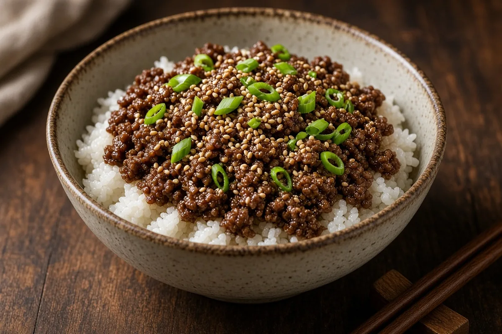

Korean Ground Beef Bulgogi Bowls with Jasmine Rice
Ground beef simmered in a sweet-savory soy, garlic, ginger, and sesame glaze over fluffy jasmine rice, finished with green onions and toasted sesame seeds. A double batch with the rice method included, ready in about an hour.

12 servings
By
Yield: 12 servings
Prep:
Cook:
Total:
Difficulty: Easy
Ingredients
- 3 cups jasmine rice
- 3 3/4 cups water, for the rice
- 1 1/2 tsp kosher salt
- 1/2 cup low-sodium soy sauce
- 1/3 cup packed brown sugar
- 2 Tbsp toasted sesame oil
- 2 Tbsp rice vinegar
- 1 tsp gochugaru or red pepper flakes
- 1/2 tsp black pepper
- 1 Tbsp cornstarch
- 1/2 cup water, for the sauce
- 1 Tbsp vegetable oil
- 2 lb ground beef (85% lean or leaner)
- 6 green onions, thinly sliced, whites and greens separated
- 6 cloves garlic, minced
- 1 Tbsp grated fresh ginger
- 2 Tbsp sesame seeds, toasted
Instructions
- Make the jasmine rice first. Put the jasmine rice in a large bowl, cover with cold water, swish with your hand, and pour off the cloudy water. Repeat 3 to 4 times, until the water runs mostly clear, then drain well in a fine sieve. Combine the rinsed rice, the 3 3/4 cups water for the rice, and the kosher salt in a heavy 5-quart pot. Bring to a boil over high heat, stir once, cover with a tight lid, and reduce the heat to the lowest setting. Cook 15 minutes without lifting the lid. Remove from the heat and let the rice steam, covered, 10 minutes, then fluff it with a fork. The rice is done when it is tender with no liquid left in the bottom of the pot; if it is still firm, sprinkle on 2 to 3 Tbsp hot water, cover, and steam 5 minutes more.
- While the rice cooks, whisk together the soy sauce, brown sugar, sesame oil, rice vinegar, gochugaru, black pepper, cornstarch, and the 1/2 cup water for the sauce until the cornstarch dissolves and the sugar is mostly melted. Set the sauce aside.
- Heat the vegetable oil in the largest HexClad skillet you own over medium-high heat. Add half of the ground beef, break it into small crumbles, and cook 5 to 6 minutes, until browned and no pink remains. Move the beef to a bowl and repeat with the rest of the beef; cooking in two batches keeps it browning instead of steaming. Return all of the beef to the skillet and pour off all but about 1 Tbsp of the fat.
- Add the white parts of the green onions, the garlic, and the ginger to the skillet and cook 1 minute, until fragrant.
- Re-whisk the sauce, since the cornstarch settles, and pour it over the beef. Bring to a simmer and cook 2 to 3 minutes, stirring, until the sauce turns glossy, clings to the beef, and no liquid pools in the pan. The beef should read at least 160°F. Taste; the beef should be sweet, salty, and garlicky.
- Scoop about 3/4 cup rice into each bowl, spoon about 1/3 cup of the bulgogi beef and its glaze on top, and finish with the green parts of the green onions and the sesame seeds.
Notes: This is a double batch: 12 rice-forward bowls on 2 lb of beef, with Sesame Broccoli alongside. For beefier bowls, serve 8 instead and keep the rest of the rice for tomorrow. Leftover beef and rice keep 4 days refrigerated; reheat together in a HexClad skillet with a splash of water until steaming hot.